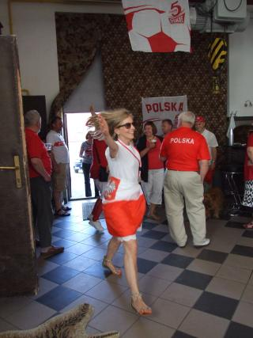
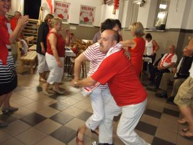

A tymczasem w Cameracie...
.
2012-06-16
Pogoda jak na zamówienie, chyba mamy „plecy” tam u góry.Specjalny bus (z powrotem przez Kraków) odjedzie z pętli autobusowej w Wieliczce, z postojem obok przejazdu kolejowego o godz. 17.45.
Camerata zbiera się na wyznaczonych miejscach i jedziemy do Małgosi i Marka. Jesteśmy na miejscu. „Salon” przygotowany przez gospodarzy. Czekamy na resztę śpiewając, tańcząc, robiąc zdjęcia.

Chyba dojechali już wszyscy, którzy chcą z nami być. Zdjęcie grupowe i do pracy, bo najpierw obowiązki a potem przyjemności.
Zaczynamy zebranie. „Szefostwo” chóru zaczyna.
Teraz dziękujemy naszej wspaniałej pani dyrygent, bez której by nie było takiego chóry. Wydelegowany został Marek, bo co, „baby” będą dawać jej buzi. Teraz nasi solenizanci . . . a jest ich, że ho-ho. Nie pamiętam, aby Camerata tyle razy śpiewała 100 lat. A 100 lat, to my śpiewamy tak jak nikt na Świecie, ale tego trzeba posłuchać opisać się nie da. I oczywiście „Niech Ci Bóg błogosławi co dnia”, łezka się w oku zakręciła.
i zaczyna się.
a potem „Polsko graj! nie rób jaj”.
 
Szkoda, że czas tak szybko mija. Pora do domu, rozchodzimy się. Było super!!! Potwierdzają się słowa naszej piosenki „Do Camerty wstąp, tu ludzie fajni są, muzyka porwie cię ...”
Klikając na ten link możesz zobaczyć zdjęcia zdjęcia ze strefy kibica

© Stowarzyszenie Muzyczne Chór Camerata Wieliczka